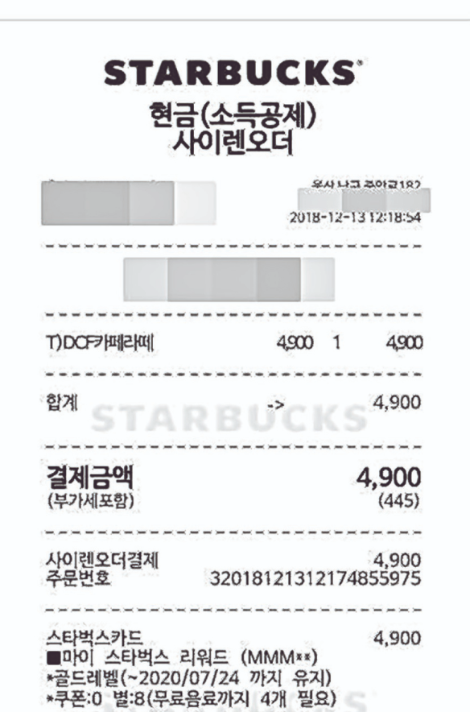

<section class="ui-modal" id="modal_digitalsign">
    <div class="ui-modal-wrap">
        <div class="ui-modal-header">
            <h2 class="ui-modal-tit">영수증 미리보기</h2>
            <button type="button" class="btn-close" aria-label="close" 
            onclick="
                $plugins.uiModalClose({ 
                    id:'modal_digitalsign', 
                    callback:function(v){ console.log(v); } 
                });">
                <span class="hide">close</span>
            </button>
        </div>
        <div class="ui-modal-body">

            <div class="digitalsign-img">
                
            </div>

            
        </div>
        <div class="ui-modal-footer">
            <div class="btn-area stick">
                <button type="button" class="btn-base">
                    <span>취소</span>
                </button>
                <button type="button" class="btn-base primary">
                    <span>다음</span>
                </button>
            </div>
        </div>
    </div>
</section>

